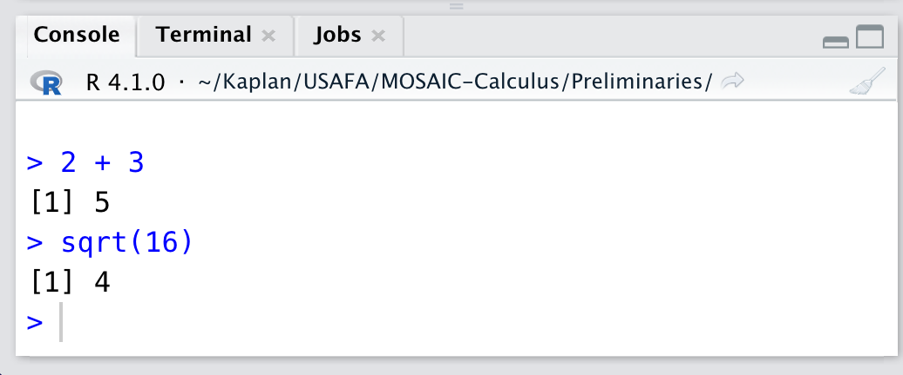
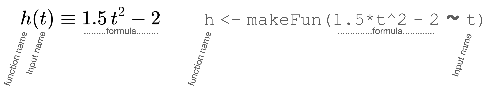

b <- 22/73 Notation & computing
\(\newcommand{\line}{\text{line}} \newcommand{\hump}{\text{hump}} \newcommand{\sigmoid}{\text{sigmoid}} \newcommand{\recip}{\text{recip}} \newcommand{\diff}[1]{{\cal D}_#1} \newcommand{\pnorm}{\text{pnorm}} \newcommand{\dnorm}{\text{dnorm}} \let\origvec\vec \let\origmathit\mathit \let\orighat\hat \let\origbar\bar \newcommand{\vec}[1]{\overset{{\rule[-1pt]{0mm}{1mm}}\rightharpoonup}{\mathbf{#1}}} \newcommand{\bar}[1]{\overset{{\rule[-1pt]{12pt}{.5mm}}}{\mathbf{#1}}} \newcommand{\mathit}[1]{\underset{\leftharpoondown}{\overset{{\rightharpoonup}}{\large\mathbf #1}}} \newcommand{\hat}[1]{\widehat{\ \mathbf#1\ }} \newcommand{\len}[1]{{\|{\mathbf #1}\|}} \newcommand{\tvec}[1]{\overset{\uparrow}{\mathbf #1}} \newcommand{\tmat}[1]{\overset{\leftrightarrows}{\mathbf #1}} \newcommand{\perpendicularto}[2]{#1\!\perp\!#2} \newcommand{\modeledby}[2]{#1\!\sim\!#2} \newcommand{\CC}[1]{\color{#648fff}{#1}} \newcommand{\CE}[1]{\color{#785ef0}{#1}} \newcommand{\CA}[1]{\color{#dc267f}{#1}} \newcommand{\CB}[1]{\color{#fe6100}{#1}} \newcommand{\CD}[1]{\color{#ffb000}{#1}}\)
The ideas which are here expressed so laboriously are extremely simple …. The difficulty lies, not in the new ideas, but in escaping from the old ones, which [branch]1, for those brought up as most of us have been, into every corner of our minds. — J. M Keynes, 1936, The General Theory of Employment, Interest, and Money, 1936
In addition to the specialized words we will use to express concepts and uses of calculus, we will also make extensive use of mathematical and computer-language notation. This chapter introduces you to the notation we’ll be using.
One goal of good notation is to make clear which of these object types it is referring to. Another goal is to build on what you already know about how mathematics is written. For historical reasons these two goals are sometimes in conflict.
Yet another goal for notation has to with the central role of computing in the contemporary technical environment. Ideally, the mathematical notation we use should extend directly to computer-language notation. But in practice there is an incompatibility stemming from two sources:
Traditional mathematical notation makes extensive use of spatial arrangement, as for instance in \(\frac{3}{4}\) or \(x^{-3}\) or \(\sqrt[4]{\strut y^2 - 6}\). For those familiar with it, this notation can be both concise and beautiful. But it was developed in an era of parchment and pen, without any inkling of keyboards and the strictly linear sequence of characters so widely used in written communication. Most mainstream computer languages are based on keyboard input.
Traditional mathematical notation was developed for communicating between people and, like everyday language, has gaps and ambiguities that get sorted out (not always correctly) by human common sense. Computer languages, on the other hand, need to be precise, unambiguous, and interpreted by machines.
We’ll attempt to use mathematical notation in a way that limits the conflict between tradition and computer notation. This conflict is particularly acute when it comes to the idea of an “equation,” so widely used in high-school mathematics but not a component of mainstream computer languages.
3.1 Functions, inputs, and quantities
Our style of notation will be to give functions and their inputs explicit names. The basic principle is that a function name is a sequence of letters followed by an empty pair of parentheses, for instance \(\sin()\) an \(\ln()\).
Traditional mathematical notation writes many functions both without a name and without the parentheses. Examples that you have likely seen are \(x^2\), \(\sqrt{\strut x}\), and \(e^x\). If we were to absolutely impose the name/parentheses principle we would refer to these functions as, say, square() and sqrt() and exp(). Notice that the \(x\) is not part of the name.
Sometimes will will use names like square() just to emphasize the point that we are talking about a function. But for the most part we will stick to the traditional form because it is ubiquitous and recognizable by most readers.
The name/parentheses notation, like exp() or sin() allows us to avoid having to write \(x\) as the indicator of where the input to the function goes. That’s helpful because, after all, the actual input might be something completely different from \(x\).
Still, there are times in which we do need to state the name of the input to functions. One of these is when defining a function. To define a function, we will use an expression like \[g(y) \equiv y \cos(y)\ .\] On the left of the \(\equiv\) goes the name of the function, with the name of the input(s) in parentheses. On the right of \(\equiv\) goes a formula for computing the output from the input. This formula is written in terms of the input name given on the left side of the definition.
In situations where there is just one input to a function, as in \(g()\) above, we could use any name for the input. For instance, all of these are exactly equivalent to the definition for \(g()\) given above:
\[g(x) \equiv x \cos(x)\\ g(z) \equiv z \cos(z))\\ g(zebra) \equiv zebra\ \cos(zebra)\]
We’ll tend to avoid hard-to-read input names like \(zebra\). Instead, we’ll mostly use :
- \(\large x\) or \(\large y\) or \(\large z\).
- \(\large t\). This name is typically used when the input is meant to be time. So if we were creating a function to represent the relationship between time (of day) and outdoor brightness, we might use this notation: \(\text{brightness}(t)\)
Other input names we will use often in this book include \(u\), \(v\), \(w\), following the 17th-century convention introduced by Newton that input names come from the end of the alphabet. But we won’t shy away from more descriptive names, like \(T\) for “temperature” or \(V\) for volume, or even \(\text{altitude}\) (which describes itself).
When a function has more than one input, the input names serve to indicate where each input goes in the formula defining the calculation. For instance: \[h(x, y) \equiv x^2 e^y\ .\] \(h()\) is a completely different function than, say, \(f(x, y) \equiv y^2 e^x\).
You may have noticed that we’ve used the names \(f()\), \(g()\), and \(h()\) a lot. Consider these names to be the equivalent of pronouns in English like “this”, “that”, “it”, and so on. Function names like \(f()\) or \(F()\) will be used when we need to refer to a function for a moment: a sentence, a paragraph, a section.
We will also have many occasions where we need to give a name to a quantity. Of course, a quantity is different from a function; functions are relationships between quantities.
For example, we will use names for quantities that are parameters in a function, like: \[g(x) \equiv a x^2 + b x + c\ .\] Here, \(x\) is the name given to the input to \(g()\), while \(a\), \(b\), and \(c\) are names for other quantities involved in the formula.
Again following Newton’s convention, names for quantities will come from the beginning of the alphabet. For instance, here is a definition of a function called a “cubic polynomial”: \[h(x)\equiv a + b x + c x^2 + d x^3\ .\] But there will be occasions where we need to compare two or more functions and run out of appropriate names from the start of the alphabet. A way to keep things organized is to use subscripts on the letters, for instancecomparing \[g(x) \equiv a_0 + a_1 x^2 + a_2 x^2 + a_3 x^3 + a_4 x^4\] to \[f(x) \equiv b_0 + b_1 x^2 + b_2 x^2\ .\]
Other ways professionals expand the set of letters from the start of the alphabet:
- Use capital letters: \(A\), \(B\), \(C\), and so on
- Use Greek letters: \(\alpha\), \(\beta\), \(\gamma\), \(\delta\), …
3.2 Function output
We will often apply a function to specific input quantities in order to produce an output from the function. An equivalent phrase is evaluate a function on an input. For instance, to apply the function \(g()\) to the input quantity 3, any of the following mathematical expressions might be used: \[g(3)\ \ \ \text{or}\ \ \ \ g(x=3) \ \ \ \text{or}\ \ \ \ g(x)\left.\Large\strut\right|_{x=3}\ .\] Remember that \(g(3)\) or its equivalents are not themselves functions. They are the quantity that results from applying a the function to an input quantity.
3.3 Inputs, arguments, and variables
In everyday speech, an “argument” is a discussion between people with differing views. But in mathematics and computing, argument means something else entirely: it is a synonym for “input to a function.”
In this text, we’ll mostly use “input” to refer to what goes into a mathematical function, although using “argument” would be fine. As regards computer functions … In Section @ref(makefun) you’ll see how to instruct the computer to create a mathematical function like \(g()\) or \(f()\) from the previous section. The names and format of such instructions—e.g. make a mathematical function from a formula, draw a graph of a function, plot data—are given in the same function notation we use in math. For example, makeFun() constructs a function from a formula, slice_plot() graphs a function, gf_point() makes one style of data graphic. These R entities saying “do this” are also called “functions.”
When referring to such R “do this” functions, we’ll refer to the stuff that goes in between the parentheses as “arguments.” The word “input” would also be fine. The point of using “input” for math functions and “argument” for R “do this” functions is merely to help you identify when we are talking about mathematics and when we are talking about computing.
A word we will not make much use of is “variable.” You are probably used to statements like, “\(x\) and \(y\) are the variables,” and it will take you a while to stop using them reflexively. The reason we will use “input” or “argument” instead of “variable” is that variable means too many different things in different contexts. For instance, in the algebra-course instruction, “Solve \(3x - 2 = x^2\),” the \(x\) is really a quantity, unknown at first but soon to be resolved by your algebraic skills. The \(x\) in the solving problem would often be called a “variable,” but it’s not at all an “input” or an “argument.”
There are two contexts in which we will use “variable,” neither of which has to do with inputs to functions. In talking about data, we will use “variable” in the statistical sense, meaning “a type of quantity” like height or pH. And in the final part of the text, involving system whose configuration changes in time, we’ll use “variable” in the sense of “a quantity that varies over time.”
3.4 Computing: commands and evaluation
Mathematical notation is effective for describing functions and operations, but computing notation provides a way to go beyond the description to actually carry out the operations. Computer notation will be an equal partner to mathematical notation in MOSAIC Calculus.
With computers, writing an expression in computer notation goes hand-in-hand with evaluating the notation. We’ll start with the simplest mode of evaluation, where you are writing the expression in the console for the language. Figure @ref(fig:R-console) shows and example the console tab provided by the RStudio application.

In Figure 3.1 we have come in to the story in the middle of the action. To start, there was just a prompt character.
\(\color{blue}{\mathtt >}\)
The person at the keyboard then typed a simple expression: 2 + 3
\(\color{blue}{\mathtt >\ 2 + 3}\)
Having completed the expression, the keyboarder presses “return.” The RStudio application sends the expression to the software that “interprets” it according to the rules of the R language. Since 2 + 3 is a complete, valid R expression, the R-language software carries out the action specified—adding 2 and 3—and returns the result to RStudio, which displays it just below the expression itself. \(\color{blue}{\mathtt >\ 2 + 3}\\\mathtt{[1]\ 5}\)
Note that the value of the expression is simply the number 5. The R language is set up to format numbers with an index, which is helpful when the value of the expressions is a large set of numbers. In the case here, with just a single number in the result of evaluating the expression, the index is simply stating the obvious.
Having printed the result of evaluating the 2 + 3 expression, RStudio shows another prompt, signally that it’s ready for you to enter your next expression. In Figure 3.1) we’re seeing the console after the person at the keyboard has responded to the prompt by writing another expression, pressed return, had RStudio print the value of that expression, and displayed a new prompt.
The two expressions shown in the console in Figure 3.1 both evaluate to single numbers. We say, “the command returns a value.” The command is a valid R expression followed by the instruction (“Return”) to evaluate the command. The value of the expression is the result of evaluating the command.
Another common form of R expression is called assignment. An assignment means “giving a name to a value.” It’s done with a more complicated expression, like this:
The result of evaluating this command is to store in the computer memory, under the name b, the value of 22/7. Because the value is being stored, R is designed not to display the value as happened with the first two commands in the console. If you want to see the value printed out, give the name as a command:
b
## [1] 3.142857This book displays the command being evaluated in a gray box, without a prompt. The value returned by the command is displayed underneath the command, prefaced by \(\color{red}{\mathtt{\#\#}}\). In the book formatting, the four commands we have just described would be displayed in this way:
2 + 3
## [1] 5
sqrt(16)
## [1] 4
b <- 22/7
b
## [1] 3.142857When reading this book, take care to distinguish between the display of a command and the display of the value returned by that command. The first is something you type, the second is printed by the computer.
3.5 Functions in R/mosaic
One of the fundamental mathematical operations in this book is defining functions. You’ve already seen the way we use mathematical notation to define a function, for instance, \[h(t) \equiv 1.5\, t^2 - 2\ .\] The R/mosaic equivalent to the definition of \(h()\) is:
h <- makeFun(1.5*t^2 - 2 ~ t)Once you have defined a function, you can evaluate it on an input. The R notation for evaluating functions is exactly the same as with mathematical notation, for instance,
h(4)
## [1] 22or
h(t=4)
## [1] 22There are obvious differences, however, between the mathematical and computing notation used to define a function. All the same information is being provided, but the format is different. That information is:
- the name of the function: \(h()\) or
h. When writing the name of a computer-defined function, we’ll put the reminder parentheses after the name, as inh(). - the name of the input to the function: \(x\) or
x - the calculation that the function performs, written in terms of the input name. \(1.5 t^2 -2\) or
1.5 * t^2 - 2.
Laying out the two notation forms side by side let’s us label the elements they share:

For the human reading the mathematical notation, you know that the statement defines a function because you have been told so. Likewise, the computer needs to be told what to do with the provided information. That’s the point of makeFun(). There are other R/mosaic commands that could take the same information and do something else with it, for example create a graph of the function or (for those who have had some calculus) create the derivative or the anti-derivative of the function.
In R, things like makeFun() are called “functions” because, like mathematical functions, they turn inputs into outputs. In the case of makeFun(), the input is a form called a tilde expression, owing to the character tilde (~) in the middle. On the right-hand side of the tilde goes the name of the input. On the left-hand side is the R expression for the formula to be used, written as always in terms of the input name. The whole tilde expression is taken as the one argument to makeFun(). Although it may seem odd to have punctuation in the middle of an argument, remember that something similar happens when we write \(h(t=3)\).
3.6 Names and assignment
The command
h <- makeFun(1.5*t^2 - 2 ~ t)gives the name h to the function created by makeFun(). Good choice of names makes your commands much easier for the human reader.
The R language puts some restrictions on the names that are allowed. Keep these in mind as you create R names in your future work:
- A name is the only2 thing allowed on the left side of the assignment symbol
<-. - A name must begin with a letter of the alphabet, e.g.
able,Baker, and so on. - Numerals can be used after the initial letter, as in
final4org20. You can also use the period.and underscore_as inthird_place. No other characters can be used in names: no minus sign, no@sign, no/or+, no quotation marks, and so on.
For instance, while third_place is a perfectly legitimate name in R, the following are not: 3rd_place, third-place. But it’s OK to have names like place_3rd or place3, etc., which start with a letter.
R also distinguishes between letter case. For example, Henry is a different name than henry, even though they look the same to a human reader.
3.7 Formulas in R
The constraint of the keyboard means that computer formulas are written in a slightly different way than the traditional mathematical notation. This is most evident when writing multiplication and exponentiation. Multiplication must always be indicated with the * symbol, for instance \(3 \pi\) is written 3*pi. For exponentiation, instead of using superscripts like \(2^3\) you use the “caret” character, as in 2^3. The best way to learn to implement mathematical formulas in a computer language is to read examples and practice writing them.
Here are some examples:
| Traditional notation | R notation |
|---|---|
| \(3 + 2\) | 3 + 2 |
| \(3 \div 2\) | 3 / 2 |
| \(6 \times 4\) | 6 * 4 |
| \(\sqrt{\strut4}\) | sqrt(4) |
| \(\ln 5\) | log(5) |
| \(2 \pi\) | 2 * pi |
| \(\frac{1}{2} 17\) | (1 / 2) * 17 |
| \(17 - 5 \div 2\) | 17 - 5 / 2 |
| \(\frac{17 - 5}{\strut 2}\) | (17 - 5) / 2 |
| \(3^2\) | 3^2 |
| \(e^{-2}\) | exp(-2) |
Each of these examples has been written using numbers as inputs to the mathematical operations. The syntax will be exactly the same when using an input name such as x or y or altitude, for instance (x - y) / 2. In order for that command using x and y to work, some meaning must have been previously attached to the symbols. We’ll come back to this important topic on another day.
3.8 Exercises
Exercise 2.1:  TKWEW unassigned
TKWEW unassigned
Use the MOSAIC Calculus naming conventions to answer these questions.
Question A What is \(h()\)?
- The name of a functionGood. Right. Typically we use \(f()\), \(g()\), \(h()\) or something similarly generic to stand for a function that we’re going to be working with for a little while. Think of these as pronouns. Just as we can say, meaningfully, “She gave it to him,” we can say \(h(x) \equiv f(x) + g(2*x)\)
- The name of an input.︎✘ Sorry, these will usually be letters like \(x\), \(y\), \(t\).
- A specific numerical value︎✘ Sorry, but we’ll use constructions with a subscript like \(x_0\) or \(y_\star\) and the like for these.
Question B How come we write \(f()\) for the name of a function rather than just \(f\) or \(f(x)\)?
- No good reason︎✘ We certainly intend with the empty parentheses to remind the reader that a name refers to a function. If you spot a place where we violate this intention, point it out to us.
- It’s a reminder that we’re talking about a function with the name “\(f\)”.Excellent!
- The parentheses are part of the name.︎✘ Not at all. Names in R never contain parentheses. So
f,fbar,fredare all valid names in an R command, butf()is not. We use the parentheses when writing to a human audience as a reminder that the name is referring to a function. The computer doesn’t need any such reminders
Question C What sort of thing is denoted by \(x_0\) or \(y_\star\) or \(y_{max}\)?
- A particular numerical valueGood. Right. For instance, it might be the particular value for the input to a function which produces an output of zero. Or it might be a particular location in the domain of a function.
- The name of an input︎✘ Sorry. We won’t typically use subscripts when referring to an input name.
Question D Which of these symbols might stand for the entire domain of a function?
- \(y\)Good. Right. Another term to use for a symbol standing for a domain is “name of an input”.
- \(f()\)︎✘ No, this is how we write the name of the function called “\(f\)”
- \(y_0\)︎✘ No. \(y_0\) might be used to stand for a single point in the domain.
Question E Suppose you come across \(v(w) \equiv w + 3\) in this book. What do \(v\) and \(w\) stand for?
- \(v()\) is the name of a function and \(w\) is the name of the input to that function.Good. Right. Whenever we write something like “name(another_name) \(\equiv\)”, we’re saying explicitly that “name” refers to a function and “another_name” refers to an input.
- It’s meaningless.︎✘ We’ll try not to write meaningless mathematical expressions. If we do by mistake, let us know.
- It’s the same thing as \(v = w + 3\).︎✘ \(v = w+3\) is an equation. But \(v(w) \equiv w+3\) is the format for defining a function named \(v()\).
Question F Are \(g(x) \equiv x^2\) and \(h(w) \equiv w^2\) the same function?
- Yes, although that function is being given two different names.Nice! The only thing that’s significant about the name of an input is that it be used consistently in the function algorithm.
- Of course not!︎✘ Sorry. I suppose you might ask, “What do you mean by the same function?” Remember that a function is a relationship between inputs and the output. \(g(x) \equiv x^2\) and \(h(w) \equiv w^2\) describe exactly the same relationship: the output will be the square of the input.
Exercise 2.2: LDNE unassigned
According to the notation style we use in CalcZ, which of these things is a function? Which a number?
Question A What kind of a thing is \(\sqrt{z}\)?
- A functionExcellent!
- A number︎✘ \(z\) is one of the standard names we will use for an input to a function. If we had given the function a name, for instance \(g(z) \equiv \sqrt{z}\), we would be able to tell from the \((z)\) that \(g()\) is a function. But whenever we use a standard input name, the expression is a function.
Question B What kind of a thing is \(\sqrt{y^\star}\)?
- A numberGood.
- A function︎✘ According to our convention, the name \(y^\star\) refers to a particular value as opposed to the name of a function input.
Question C What kind of a thing is \(e^{k t}\)?
- A functionExcellent!
- A number︎✘ The letter \(t\) is one of our standard letters for input names. \(k\) is a letter, but since it is not from the end of the alphabet, you have a hint that it is intended to be a parameter, that is a symbol representing a specific numerical quantity.
Question D What kind of a thing is \(k\) in the definition \(g(k) \equiv e^k\)?
- A number︎✘
- The name of an input to a function.Nice!
- A function︎✘ Notwithstanding our convention that \(k\) is not on its own a name used for inputs, when we use the full function-definition style, anything in the parentheses following the function name is explicitly stated as an input name.
Exercise 2.3: kZG5Fj unassigned
The following traditional-style notation is intended to define a function that is 2 times the pattern-book sinusoid. But something is wrong.
\[g(t) \equiv 2 \sin(x)\]
::: {.cell layout-align=“center” fig.showtext=‘false’} ::: {.cell-output-display} Question A What’s wrong with the definition?
- \(g()\) isn’t an appropriate name︎✘ You can name functions what you like.
- The formula should be written \(2 \times \sin(x)\)︎✘ You are welcome to write things that way if you want to emphasize the multiplication, but you don’t have to. On the other hand, in R it would be absolutely required to write the multiplication operator:
2 * sin(x).
- \(t\) is not a good choice for the input name.︎✘ It’s a fine choice, especially when the input is time.
- The input name in the formula doesn’t match the input name on the left side of \(\equiv\).Excellent! That’s it. Once you choose an input name (here, \(t\)), make sure to write the formula in terms of that name. ::: :::
Exercise 2.4: aeOnO5 unassigned
Consider this expression in math notation:
\[\frac{e^{k t}}{k}\]
Question A Which of the following R expressions implements the math-notation expression?
k exp(kt)︎✘ You must always express multiplication explicitly, using*between the quantities to be multiplied.
e^k*t / k︎✘ Useexp(x)for \(e^x\).
exp(k t) / k︎✘k tshould be writtenk*t
exp(k*t) / kExcellent!
1/k e^kt︎✘ 1) Use*for multiplication. 2) Useexp(x)for \(e^x\).
Exercise 2.5: ooJK5d unassigned
Suppose you want to define a straight-line function named \(f()\) such that \(f(x)\equiv m x + b\). Each of the following R statements is incorrect for this purpose. Say why.
Question A f <- m*x + b
- Need to use
makeFun()to define a function.Excellent!
mis not defined.︎✘
bis not defined.︎✘
- Should be
y <- m*x + b.︎✘
Question B f <- makeFun(m*x + b)
- The first argument to
makeFun()should be a tilde expression.Right!
mis not defined.︎✘
bis not defined.︎✘
makeFun()requires two inputs.︎✘ No, but it does require a tilde expression input.
Question C f <- makeFun(x ~ m*x + b)
- The tilde expression should have the input name on the right-hand side of the
~.Good.
mis not defined.︎✘
bis not defined.︎✘
- The first argument is not a tilde expression.︎✘ Actually, it is a tilde expression, just not the right sort of tilde expression.
Question D f <- makeFun(mx + b ~ x)
- The tilde expression is missing the multiplication operator
*betweenmandxGood.
mis not defined.︎✘
bis not defined.︎✘
- The name
fis mis-spelled.︎✘
::: {.cell layout-align=“center” fig.showtext=‘false’} ::: {.cell-output-display} Question E f <- makeFun(b*x + m ~ x)
- The roles of
mandbhave been reversed.Good.
mis not defined.︎✘
bis not defined.︎✘
xis not defined.︎✘ ::: :::
Exercise 2.6: BXCA4 unassigned
Open a SANDBOX. (Just click on that link, although you may eventually be given other ways to open a sandbox.)
When you see a breakout box like this, it means that we’re providing some computer code that you can paste into a sandbox and run. For this exercise, that code is
x <- 2
sin(x)*sqrt(x)Paste those two lines into the sandbox and press “Run code.” Verify that you get this as a result:
[1] 1.285941
Each line that you pasted in the sandbox is a command. The first command gives a value to \(x\). The second command uses that value for \(x\) to calculate a function output. The function is \(g(x)\equiv \sin(x) \times \sqrt{\strut x}\).
Why not simplify the above code to the single line sin(2)*sqrt(2)? This would produce the same output but would introduce an ambiguity to the human reader. We want to make it clear to the reader (and the computer) that whatever \(x\) might be, it should be used as the input to both the \(\sin()\) and the \(\sqrt{\strut\ \ \ }\) functions.
In the following questions, numbers have been rounded to two or three significant digits. Select the answer closest to the computer output.
Question A Change \(x\) to 1. What’s the output of \(\sin(x) \ \sqrt{\strut x}\)
-1.51︎✘ 0.244︎✘ 0.84\(\heartsuit\ \) 0.99︎✘ 2.14︎✘ NaN︎✘
Question B Change \(x\) to 3. What’s the output of \(\sin(x) \ \sqrt{\strut x}\)
-1.51︎✘ 0.244\(\heartsuit\ \) 0.84︎✘ 0.99︎✘ 2.14︎✘ NaN︎✘
Question C Change \(x\) to \(-5\). What’s the output of \(\sin(x) \ \sqrt{\strut x}\)
- -1.51︎✘
- 0.244︎✘
- 0.84︎✘
- 0.99︎✘
- 2.14︎✘
NaNCorrect. This stands for Not-a-Number, which is what you get when you calculate the square root of a negative input.
In the sandbox, change the function to be \(\sqrt{\strut\pnorm(x)}\).
::: {.cell layout-align=“center” fig.showtext=‘false’} ::: {.cell-output-display} Question D For \(x=2\), what’s the output of \(\sqrt{\strut\pnorm(x)}\)?
-1.51︎✘ 0.244︎✘ 0.84︎✘ 0.99\(\heartsuit\ \) 2.14︎✘NaN︎✘ ::: :::
Exercise 2.7: 0V510o R formula notation
Using the R console, translate each of the following mathematical expressions into R in order to calculate the numerical value of the expression.
- \((16 - 3)/2\)
- \(\sqrt{\frac{19}{3}}\)
- \(\cos(\frac{2 \pi}{3})\)
- \(\pi^3 + 2\)
- \(\pi^{3+2}\)
Exercise 2.8: Ce79t3 makeFun()
Each of these attempts to define a mathematical function using R leads to an error message. Modify the statement so that it works properly.
f(x) <- makeFun(2*x + 3 ~ x)h <- makeFun(x ~ 2*x + 3)f <- makeFun(2x + 3)g(x) <- makeFun(4 sin(x))h2 <- 2*x + 3 ~ xg2 <- makeFun(2*x + 3 ~ y)p(x,y) <- makeFun(2 x + 3 y~ x & y)
Exercise 2.9: BaEJkS unassigned
Make this an exercise on “when things go wrong.”
When your R command is not a complete sentence, the SANDBOX will display an error like this:
Error in parse(text = x, keep.source = TRUE) :
The “unexpected end of input” is the computer’s way of saying, “You haven’t finished your sentence so I don’t know what to do.”
Each of these R expressions is incomplete. Your job, which you should do in a sandbox, is to turn each into a complete expression. Sometimes you’ll have to be creative, since when a sentence is incomplete you, like the computer, don’t really know what it means to say! But each of these erroneous expressions can be fixed by adding or changing text.
Open a sandbox and copy each of the items below, one at a time, into a sandbox. Press “Run code” for that item and verify that you get an error message.
For the first item, the sandbox will look like this:

Then, fix the command so you get a numerical result rather than the error message.
Working through all of these will help you develop an eye and finger-memory for R commands.
sin 3((16 - 4) + (14 + 2) / sqrt(7)pnorm(3; mean=2, sd=4)log[7]14(3 + 7)e^23 + 4 x + 2 x^2
3.9 Drill questions
Question i Which of these is the symbol for “is defined as”?
- \(=\)︎✘ An equals sign says that the two sides happen to be equal, not that the left side is defined as the right side.
- \(\equiv\)Right! Three parallel bars signify a definition.
- \(\sim\)︎✘
- \(\approx\)︎✘
Question ii What is the name of the function defined by \[f(y) \equiv \sin(y) + e^y \ ?\]
- \(f\)Good. Note that we will usually write function names with trailing parentheses, like \(f()\), in order to remind you that \(f\) refers to a function rather than an input or parameter or whatever.
- \(\sin\)︎✘
- \(f(y)\)︎✘ This isn’t a function name. This is how we write the output from applying function \(f()\) to the input denoted by the name \(y\).
Question iii How do we refer to the output generated by applying \(g(x) \equiv x+3\) to the input 3?
- \(g(x)\)︎✘
- \(g(3)\)Good.
- \(y = 6\)︎✘ It’s a habit from high-school math to use the name \(y\) for outputs. Breaking that habit will help you learn and use calculus.
Question iv Is xx a legitimate name in R?
True\(\heartsuit\ \) False︎✘
Question v Is x_x a legitimate name in R?
True\(\heartsuit\ \) False︎✘
Question vi Is -x a legitimate name in R?
- True︎✘
- FalseRight! The minus sign are other such symbols are not allowed characters in an R name.
Question vii Is 3x a legitimate name in R?
True︎✘ False\(\heartsuit\ \)Names should start with a letter
Question viii Is x3 a legitimate name in R?
True\(\heartsuit\ \)Numbers are OK in names, so long as the first character is a letter False︎✘
Question ix Is sqrt a legitimate name in R?
True\(\heartsuit\ \)In fact, it is the name of an oft-used function in R. False︎✘
Question x Is x + y a legitimate name in R?
- True︎✘
- FalseRight!
x + yis an R expression that uses names, but the expression is not itself a name.
Question xi Is 3 * x a legitimate name in R?
True︎✘ False\(\heartsuit\ \)* and
Question xii Is xprime a legitimate name in R?
True\(\heartsuit\ \) False︎✘
Question xiii Is x prime a legitimate name in R?
True︎✘ False\(\heartsuit\ \)Names cannot have blank spaces internally.
Question xiv Is dx a legitimate name in R?
True\(\heartsuit\ \) False︎✘
Question xv Is xx a legitimate name in R?
True\(\heartsuit\ \) False︎✘
Question xvi Is dx_f a legitimate name in R?
True\(\heartsuit\ \) False︎✘
Question xvii What’s wrong with this assignment statement?
x < 4
Nothing︎✘ It’s missing part of the <- token.\(\heartsuit\ \) x is an improper name.︎✘
Question xviii What’s wrong with this assignment statement?
3*x <- 4
- Nothing︎✘ The item to the left of
<-needs to be a valid name.3*xis not.
- It should use addition instead of multiplication.︎✘
- The item to the left of
<-needs to be a nameGood.3 * xis an instruction to multiply 3 times x. It is not a name.
- There’s no
xon the right-hand side of the assignment arrow.︎✘
Question xix What’s wrong with this assignment statement?
x -> 3+4
- Nothing︎✘
- You can’t use addition in an assignment statement.︎✘ You can, but it has to be on the right side of the assignment, where you construct the value to be assigned to the name on the left side.
- The assignment has to point toward the name, not the valueGood.
Question xx We can write something like
\(f(x) \equiv x^2\)
in mathematical notation. Is it legit in R to write f(x) <- x^2 ?
- Yes, it’s fine.︎✘
f(x)is not a valid name in R.Excellent!
- Almost. You need to use () instead of
<-.︎✘ There’s no symbol () on the keyboard or recognized in the R language.
Question xxi Using our notation conventions from the textbook, which one of the following kinds of things is \(y_0 ?\)
- A constantGood.
- A function name︎✘
- An input name︎✘ A subscript (like \(_0\) here) or non-numeric superscript (like \(^\star\)) on what would otherwise be an input name will be instead a constant.
Question xxii Using our notation conventions from the textbook, which one of the following kinds of things is \(t^\star?\)
- A constantNice!
- A function name︎✘
- An input name︎✘ A subscript (like \(_0\) here) or non-numeric superscript (like \(^\star\)) on what would otherwise be an input name will be instead a constant.
Question xxiii Using our notation conventions from the textbook, which one of the following kinds of things is \(B ?\)
- A constantRight!
- A function name︎✘
- An input name︎✘ The letters from the start of the alphabet, a-d, or A-D will refer to a constant.
Question xxiv Using our notation conventions from the textbook, which one of the following kinds of things is \(F() ?\)
- A constant︎✘
- A function nameCorrect. Our standard pronouns for functions are \(f(), g(), h()\) and \(F(), G(), H()\)
- An input name︎✘
Question xxv Using our notation conventions from the textbook, which one of the following kinds of things is \(u ?\)
- A constant︎✘
- A function name︎✘
- An input nameExcellent! Letters from the end of the alphabet, \(u, v, w, x, y, z\), generally refer to an input to a function. But, remember, something like \(x_0\) will always be a constant.
Question xxvi Can function names be multiple letters, e.g. g3() or altitude()?
- YesCorrect. And they often do. Almost all R functions have multi-letter names, like
exp(),sin(),dnorm(), and such. When you are building a model, it’s helpful to use mnemonic function names rather than the usual pronouns like \(f(), g()\), an \(h()\). We use the short pronouns throughout the book whenever we are discussing general mathematical properties rather than specific models.
- No︎✘
Question xxvii In the book, will input names have subscripts, like \(x_0\) or \(u_2 ?\)
- Yes︎✘
- NoExcellent! In the textbook, we try to reserve names like \(x_0\) or \(u_2\) for constants. But mathematics usage generally doesn’t always adopt this helpful convention.
Question xxviii In the book, what is meant by the word “variable”?
- It’s the same as input.︎✘ Use input rather than variable! Even if you’re used to calling quantities like \(x\) and \(y\) variables, it’s a confusing practice since it can mean so many different things. In calculus, in this course, we’ll try to be strict about using the words input and output
- It’s the same as output.︎✘
- A column in a data table.Right! This is the use in statistics and data science. In calculus, we’ll try to avoid confusing by using input and output instead.